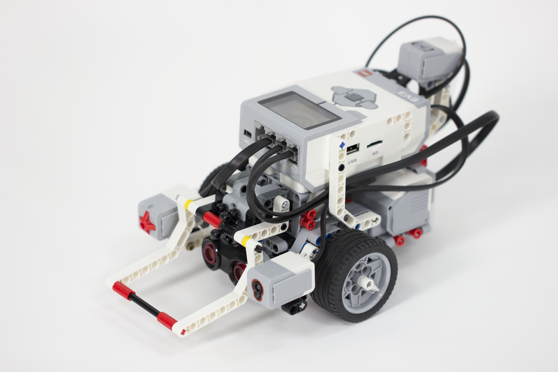

Enlace de descarga manual lego
Metas y opiniones
- Lego es una herramienta practica parecida a scratch.
- Nuestra metas eran aprender acerca del tema de inteligencia artificial.
- Lego fue lo mas interesante del curso ya que en el podemos ver fisicamente lo que programamos
- Para sacarle todo el provecho a esta gran herramienta hay que dedicarle horas extra clase y lograras algo que te sorprenda
Descripcion y caracteristas del proyecto
- Realizamos diferentes practicas muy interesantes por ejemplo hicimos una practica donde el robot ev3 se movia en diferentes figuras geometricas.
- El proyecto final fue el mas importante de todos ya que utilizamos todo lo que vimos durante el curso.
- EL proyecto consistio en que el robot tenia que distinguir diferentes sensores de colores girara y se moviera el que hiciera menos tiempo ganaba 